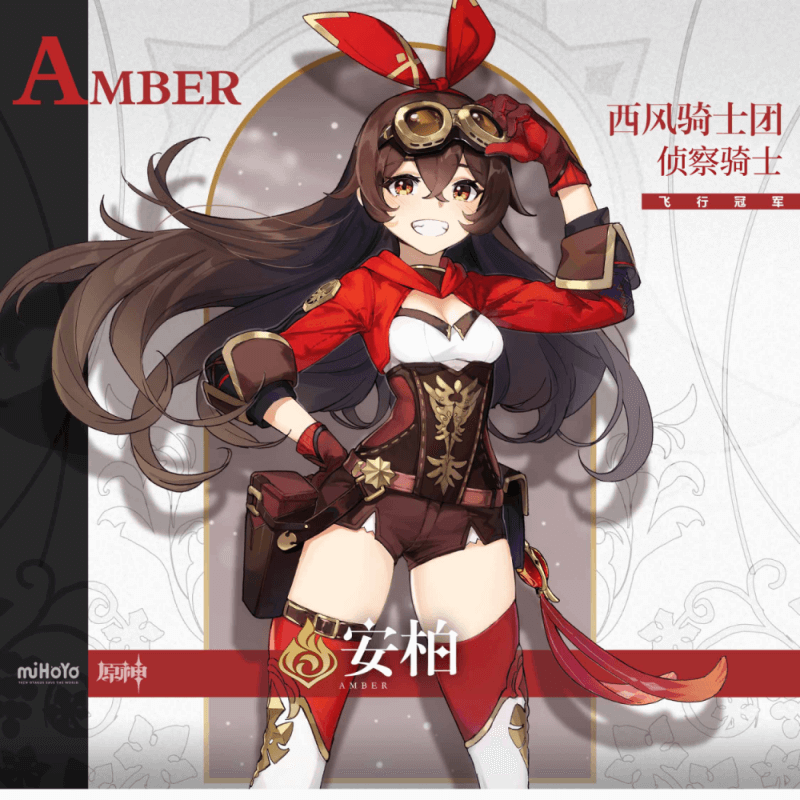

旅行者
从世界之外漂流而来的旅行者，被神带走血亲，自此踏上寻找七神之路。
温迪
蒙德城诸多吟游诗人中的一位，自由自在地穿行在街头巷尾
钟离
被「往生堂」请来的神秘客人,知识渊博,对各种事物都颇有见地。
雷电将军
其身为御建鸣神主尊大御所大人，许稻妻人民以亘古不变之「永恒」。
纳西妲
深居净善宫的笼中之鸟，只能在梦中将世界尽收眼底。

安柏
永远充满活力的女孩，骑士团最优秀，同时也是最后的侦察骑士。
芭芭拉
蒙德城的大家都喜欢芭芭拉。「偶像」这个词是她从一本杂志里看到的。
可莉
西风骑士团禁闭室的常客，蒙德的爆破大师。人称「逃跑的太阳」。
甘雨
月海亭的秘书，体内流淌着仙兽「麒麟」的血脉。
胡桃
「往生堂」七十七代堂主，年纪轻轻就已主掌璃月的葬仪事务。
申鹤
气质出尘的仙家子弟。隐修在璃月群山之间，个性也如仙人般淡漠疏离。
宵宫
「长野原烟花店」店长，「夏祭的女王」，将人们的愿望寄托于烟花中的能工巧匠。
神里绫华
稻妻「社奉行」神里家的大小姐。端庄而文雅，聪慧又坚韧。
珊瑚宫心海
海衹岛的「现人神巫女」，统管海祇岛各项事宜的少女。
柯莱
活跃于道成林的见习巡林员，热情的言行背后是一颗依旧稍显内向的心。
妮露
祖拜尔剧场的知名舞者，舞姿灵动优美，为人纯真亲善。
迪希雅
横行须弥沙漠地佣兵组织「镀金旅团」地成员，勇敢而又强大的战士，在「镀金旅团」内部声名赫赫。